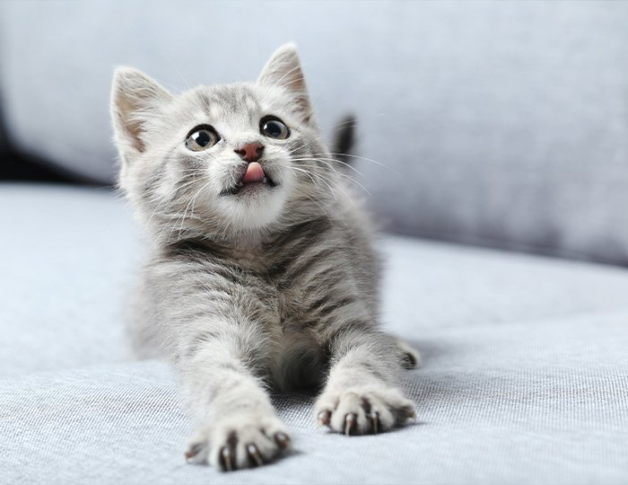
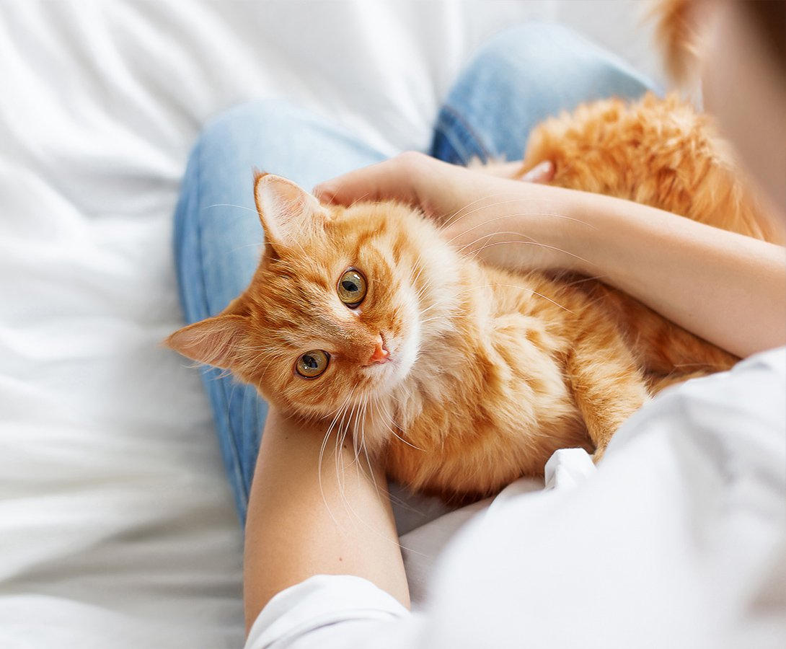
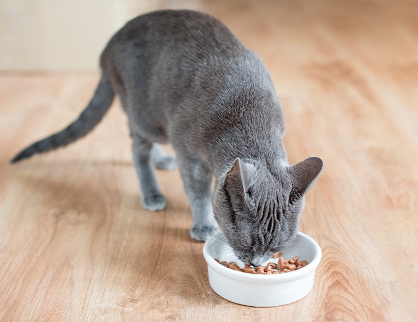
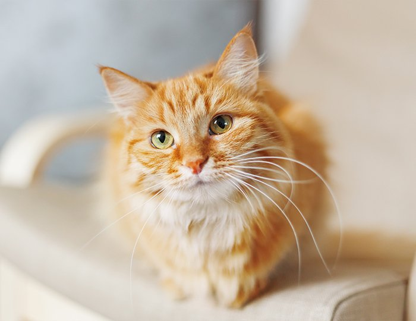
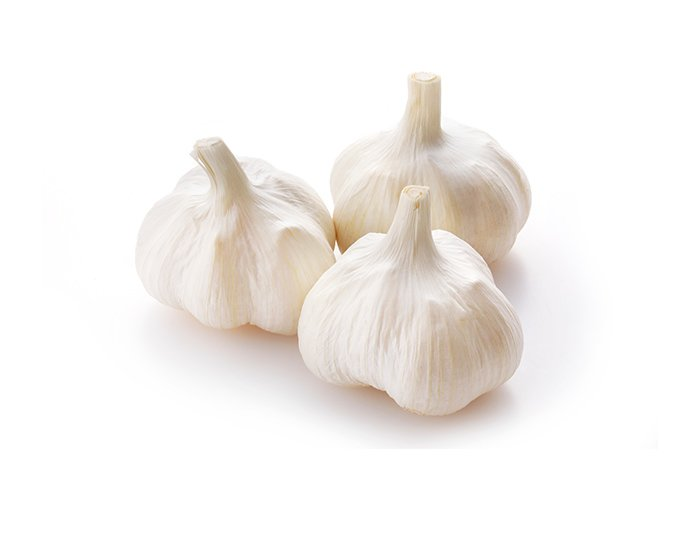
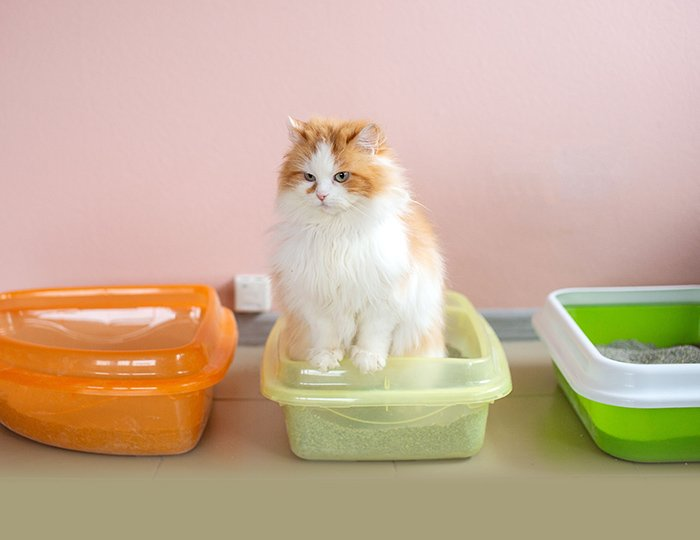
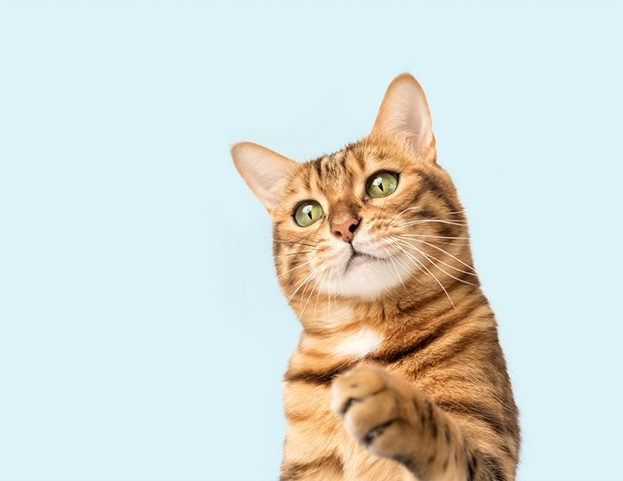
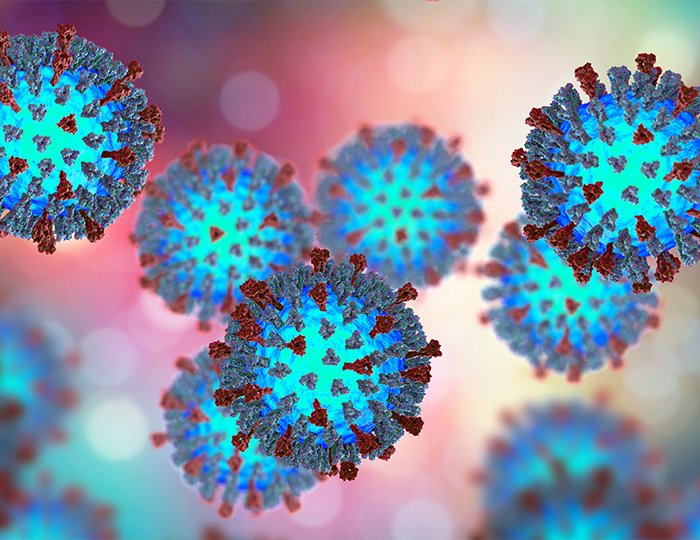

毛玉、猫草を吐く
ブラッシングをこまめにしたり、毛玉コントロールなどのフードで緩和できるでしょう。


猫ちゃんはよく吐く生き物なので、吐いた後に元気そうであれば健康上問題はありません。一方で、嘔吐は病気のサインにもなりますので注意することが大切です。
また、猫ちゃんの吐く行為には、「嘔吐」と「吐出」の２つがあります。 嘔吐とは、胃や腸の内容物が口から出てくることをいいます。胃液や消化途中のフードや毛玉を吐き出すことが多いです。
吐出とは、胃の中に入る前に飲み込んだ物が口から出てくることです。フードが同じ状態のまま出てくることが多いです。

毛玉、猫草を吐く
ブラッシングをこまめにしたり、毛玉コントロールなどのフードで緩和できるでしょう。

一度に大量に食べたごはんを吐く
少量のごはんを複数回に分けて与えることで、吐く頻度を軽減できるでしょう。

空腹時に胃液（白い泡）、黄色い液体（胆汁）を吐く
胃に負担をかけない、消化しやすいごはんと水分を与えることで、症状が改善されるでしょう。
うんちには猫ちゃんの健康情報がたくさんつまっています。健康管理にも役立ちますので、日々うんちの様子を確認しましょう。
下痢になる理由には様々な要因があります。下痢が重篤な病気のサインになることもあるので、気になる症状が継続するようであれば、早期に動物病院に相談しましょう。

食べてはいけないものを飲み込んだ
ネギ類（にんにく、たまねぎ）やユリ科の植物は、中毒症状を引き起こす可能性がありますので、注意してください。

食物アレルギー
原因となるアレルゲンを含む食べ物を摂取することで、下痢の症状が現れます。

ストレス
同居猫との相性が悪い、引越しをして生活環境が大きく変わった、騒音が続くなどのストレスも下痢となる原因です。

感染症
寄生虫、ウイルス、細菌による感染症が原因で、下痢が続くケースがあります。
子猫の下痢の原因は食事、寄生虫、細菌、ウイルス、環境など様々です。離乳期に食事が原因で下痢することもあります（食事を変更する、ミルクに戻す）。
子猫の下痢は、症状が続くと脱水や体温低下が生じ、命にかかわることがありますので、早めに動物病院で診察を受けることをおすすめします。
便秘は見落としがちですが、猫ちゃんの健康のサインとして重要です。健康であれば、1日に1回～2回は排便をするので、排便をしていなければ動物病院に相談しましょう。
便秘の原因としては、以下のようなことが挙げられます。
各院の診療時間・ご予約方法は、開院に向けて決定次第ご案内いたします。